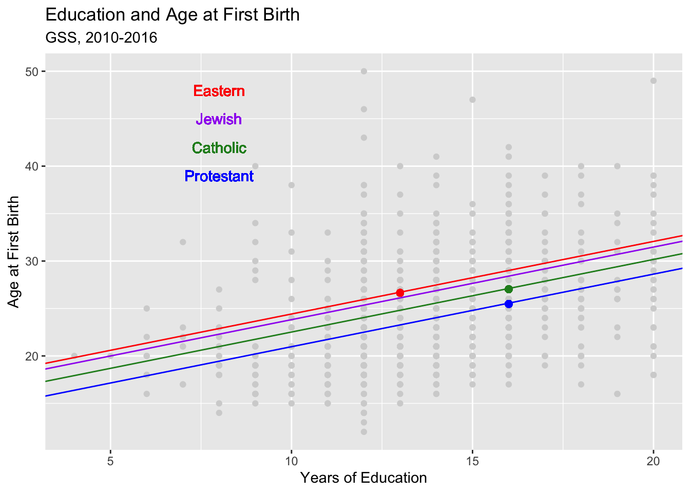

library(tidyverse)
gss_week11 <- read.csv("https://raw.githubusercontent.com/mjclawrence/soci385_f23/main/data/gss_week_11.csv")OLS With Multiple Variables
Setting Up
We’ll use the gss_week_11.csv file on Canvas. Load it as a data frame called gss_week11 and load the usual packages.
Warm Up / Review
Warm Up 1: Regress age at first birth (agekdbrn) on years of education (educ)
REPLACE THIS LINE WITH YOUR CODE CHUNK
warmup1 <- lm(agekdbrn ~ educ, data = gss_week11)
summary(warmup1)
Call:
lm(formula = agekdbrn ~ educ, data = gss_week11)
Residuals:
Min 1Q Median 3Q Max
-12.5223 -3.5605 -0.9757 2.8548 27.0243
Coefficients:
Estimate Std. Error t value Pr(>|t|)
(Intercept) 13.46735 0.80342 16.76 <2e-16 ***
educ 0.79237 0.05768 13.74 <2e-16 ***
---
Signif. codes: 0 '***' 0.001 '**' 0.01 '*' 0.05 '.' 0.1 ' ' 1
Residual standard error: 5.157 on 1055 degrees of freedom
(868 observations deleted due to missingness)
Multiple R-squared: 0.1518, Adjusted R-squared: 0.1509
F-statistic: 188.7 on 1 and 1055 DF, p-value: < 2.2e-16Predict age at first birth for respondents with 16 years of education:
REPLACE THIS LINE WITH YOUR CODE CHUNK
13.46735 + .79237*16[1] 26.14527Warm Up 2: Regress age at first birth (agekdbrn) on highest degree (degree). Use “College Degree” as the reference group.
REPLACE THIS LINE WITH YOUR CODE CHUNK
gss_week11$degree <- factor(gss_week11$degree,
levels = c("Less Than HS", "HS Diploma",
"Some College", "College Degree",
"Grad/Prof Degree"))
gss_week11$degree <- relevel(factor(gss_week11$degree), ref = "College Degree")
warmup2 <- lm(agekdbrn ~ degree, data = gss_week11)
summary(warmup2)
Call:
lm(formula = agekdbrn ~ degree, data = gss_week11)
Residuals:
Min 1Q Median 3Q Max
-11.7426 -3.3598 -0.9965 2.6402 27.0035
Coefficients:
Estimate Std. Error t value Pr(>|t|)
(Intercept) 27.3598 0.4000 68.400 < 2e-16 ***
degreeLess Than HS -6.5101 0.5758 -11.307 < 2e-16 ***
degreeHS Diploma -4.3633 0.5027 -8.680 < 2e-16 ***
degreeSome College -3.3286 0.4917 -6.770 2.14e-11 ***
degreeGrad/Prof Degree 0.3829 0.5941 0.645 0.519
---
Signif. codes: 0 '***' 0.001 '**' 0.01 '*' 0.05 '.' 0.1 ' ' 1
Residual standard error: 5.122 on 1052 degrees of freedom
(868 observations deleted due to missingness)
Multiple R-squared: 0.1655, Adjusted R-squared: 0.1623
F-statistic: 52.14 on 4 and 1052 DF, p-value: < 2.2e-16Predict age at first birth for respondents with a graduate or professional degree:
REPLACE THIS LINE WITH YOUR CODE CHUNK
27.3598 + .3829[1] 27.7427Warm Up 3: Regress having a first child at age 30 or later (agekdbrn_30plus) on religion (religion). Use “Protestant” as the reference group.
REPLACE THIS LINE WITH YOUR CODE CHUNK
gss_week11$religion <- relevel(factor(gss_week11$religion), ref = "Protestant")
summary(lm(agekdbrn_30plus ~ religion, data = gss_week11))
Call:
lm(formula = agekdbrn_30plus ~ religion, data = gss_week11)
Residuals:
Min 1Q Median 3Q Max
-0.4815 -0.1754 -0.1499 -0.1499 0.8501
Coefficients:
Estimate Std. Error t value Pr(>|t|)
(Intercept) 0.149915 0.015756 9.515 < 2e-16 ***
religionCatholic 0.068709 0.028952 2.373 0.01782 *
religionEastern 0.304631 0.082899 3.675 0.00025 ***
religionJewish 0.331567 0.075137 4.413 1.13e-05 ***
religionNone 0.009377 0.039216 0.239 0.81106
religionOther 0.025524 0.052961 0.482 0.62995
---
Signif. codes: 0 '***' 0.001 '**' 0.01 '*' 0.05 '.' 0.1 ' ' 1
Residual standard error: 0.3817 on 1047 degrees of freedom
(872 observations deleted due to missingness)
Multiple R-squared: 0.03204, Adjusted R-squared: 0.02742
F-statistic: 6.931 on 5 and 1047 DF, p-value: 2.229e-06Predict probability of having a first child at age 30 or later for Jewish respondents:
REPLACE THIS LINE WITH YOUR CODE CHUNK
.149915 + .331567[1] 0.481482Introducing Multiple Regression
Why do we control for other variables? The idea is to find another variable, hold it constant, and see if the association between X and Y changes.
In R, include more variables by linking them to the independent variable with a plus sign. In this example, we want to regress age at first birth on education, holding religion constant:
agekd_educ_religion <- lm(agekdbrn ~ educ + religion,
data = gss_week11)
summary(agekd_educ_religion)
Call:
lm(formula = agekdbrn ~ educ + religion, data = gss_week11)
Residuals:
Min 1Q Median 3Q Max
-13.3572 -3.4731 -0.7609 2.5773 25.9809
Coefficients:
Estimate Std. Error t value Pr(>|t|)
(Intercept) 13.32194 0.81313 16.384 < 2e-16 ***
educ 0.76259 0.05792 13.167 < 2e-16 ***
religionCatholic 1.54599 0.38639 4.001 6.75e-05 ***
religionEastern 3.44548 1.10633 3.114 0.00189 **
religionJewish 2.85010 1.01669 2.803 0.00515 **
religionNone -0.14292 0.52325 -0.273 0.78480
religionOther 1.24962 0.70710 1.767 0.07748 .
---
Signif. codes: 0 '***' 0.001 '**' 0.01 '*' 0.05 '.' 0.1 ' ' 1
Residual standard error: 5.093 on 1046 degrees of freedom
(872 observations deleted due to missingness)
Multiple R-squared: 0.1764, Adjusted R-squared: 0.1716
F-statistic: 37.33 on 6 and 1046 DF, p-value: < 2.2e-16To find the predicted values, need to use the full equation. For example, to predict the age at first birth for a Protestant respondent with 16 years of education:
13.32 + .76*16 + 1.55*0 + 3.45*0 + 2.85*0 - .14*0 + 1.25*0[1] 25.48Predict age at first birth for a Catholic respondent with 16 years of education:
REPLACE THIS LINE WITH YOUR CODE CHUNK
13.32 + .76*16 + 1.55*1 + 3.45*0 + 2.85*0 - .14*0 + 1.25*0[1] 27.03Predict age at first birth for respondent from an Eastern religion with 13 years of education:
REPLACE THIS LINE WITH YOUR CODE CHUNK
13.32 + .76*13 + 1.55*0 + 3.45*1 + 2.85*0 - .14*0 + 1.25*0[1] 26.65How do we make sense of this in a plot? The slopes (betas) are the same for every value of the control variable. But the intercepts are different.
Lots of code here; looking at the plot is more important than grasping all the code!
agekd_educ_religion_plot <- ggplot(gss_week11, aes(x = educ, y = agekdbrn))
agekd_educ_religion_plot + geom_point(color = "Light Gray") +
geom_abline(slope = .76529, intercept = 13.32194, color = "Blue") +
geom_abline(slope = .76529, intercept = 13.32194 + 1.54599, color = "Forest Green") +
geom_abline(slope = .76529, intercept = 13.32194 + 3.44548, color = "Red") +
geom_abline(slope = .76529, intercept = 13.32194 + 2.85010, color = "Purple") +
geom_text(x = 8, y = 48, label = "Eastern", color = "Red") +
geom_text(x = 8, y = 45, label = "Jewish", color = "Purple") +
geom_text(x = 8, y = 42, label = "Catholic", color = "Forest Green") +
geom_text(x = 8, y = 39, label = "Protestant", color = "Blue") +
geom_point(x = 16, y = 25.48, color = "Blue", size = 2) +
geom_point(x = 16, y = 27.03, color = "Forest Green", size = 2) +
geom_point(x = 13, y = 26.65, color = "Red", size = 2) +
labs(x = "Years of Education", y = "Age at First Birth",
title = "Education and Age at First Birth",
subtitle = "GSS, 2010-2016") 
Multiple Control Variables
Models can have as many control variables as you want. Just continue adding them with plus signs. Let’s try regressing age at first birth on education, religion, and race:
REPLACE THIS LINE WITH YOUR CODE CHUNK
agekd_educ_religion_race_model <-
lm(agekdbrn ~ educ + religion + racehisp, data = gss_week11)
summary(agekd_educ_religion_race_model)
Call:
lm(formula = agekdbrn ~ educ + religion + racehisp, data = gss_week11)
Residuals:
Min 1Q Median 3Q Max
-13.437 -3.485 -0.735 2.540 26.774
Coefficients:
Estimate Std. Error t value Pr(>|t|)
(Intercept) 12.8134 0.8728 14.682 < 2e-16 ***
educ 0.7420 0.0589 12.599 < 2e-16 ***
religionCatholic 1.5079 0.4110 3.669 0.000256 ***
religionEastern 3.4348 1.2394 2.771 0.005681 **
religionJewish 2.6802 1.0187 2.631 0.008641 **
religionNone -0.1464 0.5249 -0.279 0.780304
religionOther 1.2509 0.7072 1.769 0.077226 .
racehispHispanic 0.2763 0.7641 0.362 0.717710
racehispOther 0.7380 1.0481 0.704 0.481469
racehispWhite 1.0171 0.4536 2.242 0.025175 *
---
Signif. codes: 0 '***' 0.001 '**' 0.01 '*' 0.05 '.' 0.1 ' ' 1
Residual standard error: 5.086 on 1043 degrees of freedom
(872 observations deleted due to missingness)
Multiple R-squared: 0.181, Adjusted R-squared: 0.174
F-statistic: 25.62 on 9 and 1043 DF, p-value: < 2.2e-16What is the predicted age at first birth for a Black Protestant with 17 years of education?
REPLACE THIS LINE WITH YOUR CODE CHUNK
12.8134 + .7420*17[1] 25.4274What is the predicted age at first birth for a Hispanic with no religious affiliation with 14 years of education?
REPLACE THIS LINE WITH YOUR CODE CHUNK
12.8134 + .7420*14 - .1464 + .2763[1] 23.3313Comparing Models, Introducing R-Squared
R-squared is the proportional reduction in the error from using the model. We’ll calculate r-squared for the model regressing number of memberships on years of education.
memnum_educ_model <-
lm(memnum ~ educ, data = gss_week11)
summary(memnum_educ_model)
Call:
lm(formula = memnum ~ educ, data = gss_week11)
Residuals:
Min 1Q Median 3Q Max
-3.1295 -1.3117 -0.3117 0.7794 11.6883
Coefficients:
Estimate Std. Error t value Pr(>|t|)
(Intercept) -1.41495 0.20125 -7.031 2.84e-12 ***
educ 0.22722 0.01442 15.762 < 2e-16 ***
---
Signif. codes: 0 '***' 0.001 '**' 0.01 '*' 0.05 '.' 0.1 ' ' 1
Residual standard error: 1.78 on 1923 degrees of freedom
Multiple R-squared: 0.1144, Adjusted R-squared: 0.1139
F-statistic: 248.4 on 1 and 1923 DF, p-value: < 2.2e-16The r-squared value is 0.1144. Where does that number come from?
# Save the predicted values of Y:
gss_week11$pred_memnum <- memnum_educ_model$fitted.values
# Find the residuals (the observed values of Y minus the predicted values of Y) and square them:
gss_week11$res_memnum <- (gss_week11$memnum - gss_week11$pred_memnum)^2
#Find the deviations of each observed value of Y from the mean of Y:
gss_week11$dev_memnum <- (gss_week11$memnum - mean(gss_week11$memnum))^2
#Sum the squared deviations and subtract the sum of the squared residuals.
#Divide this difference by the sum of the squared deviations:
rsquared <- ((sum(gss_week11$dev_memnum)) -
(sum(gss_week11$res_memnum))) /
sum(gss_week11$dev_memnum)
rsquared[1] 0.1144075To Find Adjusted R-squared:
# adjusted_rsquared =
# 1 - (((1 - rsquared)*(n-1)) / (n-k-1))
# n = sample size; k = number of variables
adjusted_rsquared <-
1 - (((1 - rsquared)*(1924-1)) / (1924-1-1))
adjusted_rsquared[1] 0.1139467Comparing R-Squared Values
When we regress number of memberships on education and age it looks like the model is better since r-squared increases:
memnum_educ_age_model <- lm(memnum ~ educ + age, data = gss_week11)
summary(memnum_educ_age_model)
Call:
lm(formula = memnum ~ educ + age, data = gss_week11)
Residuals:
Min 1Q Median 3Q Max
-3.2381 -1.2830 -0.4119 0.8691 11.8747
Coefficients:
Estimate Std. Error t value Pr(>|t|)
(Intercept) -1.958854 0.243859 -8.033 1.65e-15 ***
educ 0.234599 0.014486 16.195 < 2e-16 ***
age 0.009605 0.002451 3.919 9.22e-05 ***
---
Signif. codes: 0 '***' 0.001 '**' 0.01 '*' 0.05 '.' 0.1 ' ' 1
Residual standard error: 1.773 on 1922 degrees of freedom
Multiple R-squared: 0.1214, Adjusted R-squared: 0.1205
F-statistic: 132.8 on 2 and 1922 DF, p-value: < 2.2e-16But be careful: R-squared will almost always go up as you add variables, even if the variables are not significant. That does not necessarily mean the model is getting better.
memnum_educ_age_place_model <-
lm(memnum ~ educ + age + place, data = gss_week11)
summary(memnum_educ_age_place_model)
Call:
lm(formula = memnum ~ educ + age + place, data = gss_week11)
Residuals:
Min 1Q Median 3Q Max
-3.2430 -1.2747 -0.4076 0.8771 11.9065
Coefficients:
Estimate Std. Error t value Pr(>|t|)
(Intercept) -1.9264512 0.2546124 -7.566 5.93e-14 ***
educ 0.2334475 0.0146100 15.979 < 2e-16 ***
age 0.0095195 0.0024569 3.875 0.00011 ***
placeNortheast 0.0009124 0.1284526 0.007 0.99433
placeSoutheast -0.0480122 0.1049289 -0.458 0.64731
placeWest 0.0250015 0.1204691 0.208 0.83561
---
Signif. codes: 0 '***' 0.001 '**' 0.01 '*' 0.05 '.' 0.1 ' ' 1
Residual standard error: 1.774 on 1919 degrees of freedom
Multiple R-squared: 0.1217, Adjusted R-squared: 0.1194
F-statistic: 53.16 on 5 and 1919 DF, p-value: < 2.2e-16